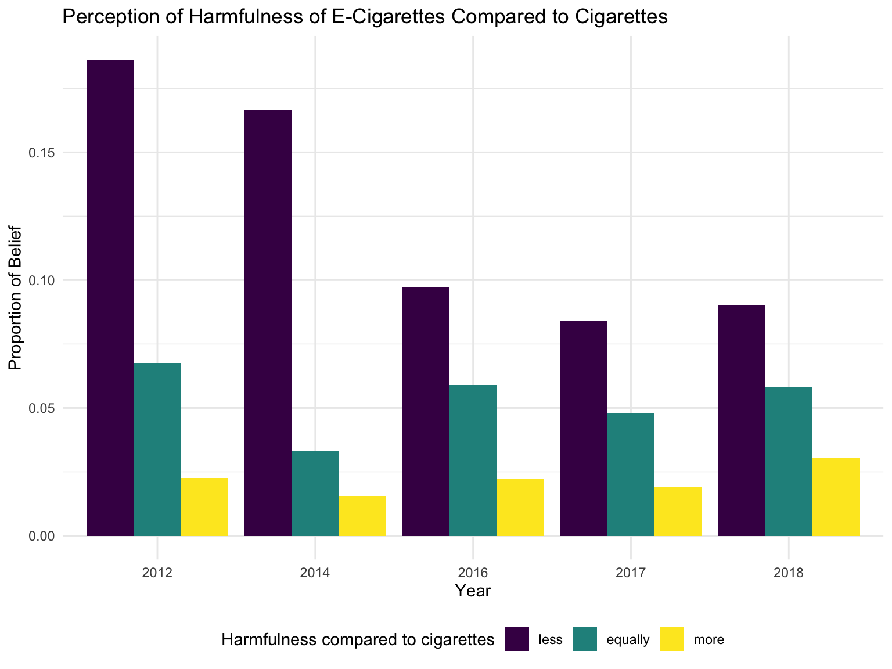

Analysis
#read in ecig data
ecig_data = read.csv("./Data/ecig_data.csv") Logistic Model
\(current\_ecigs \sim age + year + sex + race + cig\_days + harm\_ecgis + ads\_ecigs\)
ecig_data_for_regression =
read.csv("./Data/ecig_data.csv") %>%
mutate(age = as.numeric(age),
year = as.numeric(year),
weight = as.numeric(weight),
sex = factor(sex),
race = factor(race),
cig_days = factor(cig_days),
try_ecigs = factor(try_ecigs),
quit_cig = factor(quit_cig),
harm_ecigs = factor(harm_ecigs),
ads_ecigs = factor(ads_ecigs),
current_ecigs = factor(current_ecigs)) %>%
filter(!age %in% c("9", "10", "19"),
year >= 2014,
is.na(current_ecigs) != TRUE) %>%
mutate(id = row_number())
full_log_model = glm(current_ecigs ~ age + year + sex +
relevel(race, ref = "white") +
cig_days +
relevel(harm_ecigs, ref = "never heard of e-cigs") +
relevel(ads_ecigs, ref = "never"),
family = binomial,
data = ecig_data_for_regression)
#Table of beta estimates, SE, ORs, CIs, and p-values
log_model_summary =
tibble(
"Variable" = c("intercept", "age", "year", "sex (male)", "race (Indian/Native)", "race (Asian)", "race (Black)",
"race (Hispanic)", "race (Haiwaiian/Pacific)", "cig_days (1-2)", "cig_days (10-19)",
"cig_days (20-29)", "cig_days (3-5)", "cig_days (30)", "cig_days (6-9)",
"harm_ecigs (equally harmful)", "harm_ecigs (less harmful)", "harm_ecigs (more harmful)",
"harm_ecigs (unknown)", "ads_ecigs (always)", "ads_ecigs (do not use Internet)",
"ads_ecigs (most of the time)", "ads_ecigs (rarely)", "ads_ecigs (sometimes)"),
"Estimate" = round(summary(full_log_model)$coefficients[, 1], digits = 2),
"SE" = round(summary(full_log_model)$coefficients[, 2], digits = 2),
"OR" = round(exp(coef(full_log_model)), digits = 2),
"OR CI (2.5%)" = round(exp(confint(full_log_model))[, 1], digits = 2),
"OR CI (97.5%)" = round(exp(confint(full_log_model))[, 2], digits = 2),
"P-value" = round(summary(full_log_model)$coefficients[, 4], digits = 3))
log_model_summary %>% knitr::kable()| Variable | Estimate | SE | OR | OR CI (2.5%) | OR CI (97.5%) | P-value |
|---|---|---|---|---|---|---|
| intercept | -402.83 | 19.83 | 0.00 | 0.00 | 0.00 | 0.000 |
| age | 0.22 | 0.01 | 1.24 | 1.23 | 1.26 | 0.000 |
| year | 0.20 | 0.01 | 1.22 | 1.19 | 1.24 | 0.000 |
| sex (male) | 0.21 | 0.03 | 1.23 | 1.16 | 1.30 | 0.000 |
| race (Indian/Native) | 0.15 | 0.11 | 1.16 | 0.93 | 1.43 | 0.173 |
| race (Asian) | -0.78 | 0.09 | 0.46 | 0.38 | 0.55 | 0.000 |
| race (Black) | -0.78 | 0.05 | 0.46 | 0.41 | 0.51 | 0.000 |
| race (Hispanic) | -0.06 | 0.03 | 0.94 | 0.88 | 1.00 | 0.047 |
| race (Haiwaiian/Pacific) | -0.11 | 0.19 | 0.90 | 0.61 | 1.28 | 0.570 |
| cig_days (1-2) | 2.11 | 0.06 | 8.22 | 7.37 | 9.16 | 0.000 |
| cig_days (10-19) | 2.58 | 0.11 | 13.24 | 10.71 | 16.44 | 0.000 |
| cig_days (20-29) | 2.35 | 0.12 | 10.47 | 8.22 | 13.38 | 0.000 |
| cig_days (3-5) | 2.50 | 0.09 | 12.21 | 10.17 | 14.68 | 0.000 |
| cig_days (30) | 2.35 | 0.09 | 10.47 | 8.77 | 12.51 | 0.000 |
| cig_days (6-9) | 2.46 | 0.12 | 11.70 | 9.32 | 14.73 | 0.000 |
| harm_ecigs (equally harmful) | 0.44 | 0.14 | 1.56 | 1.20 | 2.06 | 0.001 |
| harm_ecigs (less harmful) | 1.62 | 0.14 | 5.06 | 3.90 | 6.67 | 0.000 |
| harm_ecigs (more harmful) | 0.87 | 0.14 | 2.40 | 1.82 | 3.20 | 0.000 |
| harm_ecigs (unknown) | -0.76 | 0.15 | 0.47 | 0.35 | 0.63 | 0.000 |
| ads_ecigs (always) | 1.22 | 0.07 | 3.39 | 2.96 | 3.89 | 0.000 |
| ads_ecigs (do not use Internet) | 0.69 | 0.08 | 1.99 | 1.71 | 2.32 | 0.000 |
| ads_ecigs (most of the time) | 1.09 | 0.06 | 2.98 | 2.66 | 3.33 | 0.000 |
| ads_ecigs (rarely) | 0.35 | 0.04 | 1.41 | 1.30 | 1.54 | 0.000 |
| ads_ecigs (sometimes) | 0.59 | 0.04 | 1.80 | 1.65 | 1.96 | 0.000 |
##OR plot
ggplot(log_model_summary, aes(x = Variable, y = OR)) +
geom_pointrange(ymin = log_model_summary$`OR CI (2.5%)`, ymax = log_model_summary$`OR CI (97.5%)`) +
geom_hline(aes(yintercept = 1), linetype = "dashed") +
ylim(c(0, 17)) +
coord_flip() +
labs(title = "95% OR CIs")From the table, we can conclude that e-cigarette consumption is significantly higher among cigarette smokers, older youth, males, white individuals, frequent viewers of online e-cig ads, and people who perceived e-cigarettes to be less harmful than cigarettes.
Timeline
Does electronic cigarette use differ across year and sex?
ecig_data %>%
filter(is.na(try_ecigs) == FALSE, is.na(sex) == FALSE) %>%
group_by(year, sex) %>%
mutate(indc = ifelse(try_ecigs == "yes", 1, 0)) %>%
summarise(y = weighted.mean(indc, as.numeric(weight))) %>%
ggplot(aes(x = year, y = y, fill = sex)) +
geom_col(position = "dodge") +
ylab("Proportion Tried E-cigarettes") +
labs(fill = "Sex",
title = "Proportion Who Have Tried E-Cigarettes, by Year and Sex") +
xlab("Year") +
scale_fill_manual(values = c("#440154FF", "#20A387FF"))From 2011-2018, we can see that the proportion of males who have tried e-cigarettes is consistently higher than females. Furthermore, both the male and female proportions spike from 2013-2014 and then relatively plateau from 2014-2018.
Has the perception of harmfulness of electronic cigarettes compared to cigarettes changed over time?
#creating survey object
srv_ecig = ecig_data %>%
mutate(id = row_number()) %>%
as_survey_design(id = id, wt = as.numeric(weight) )
#plot of harmful vs year
srv_ecig %>%
filter( !is.na(quit_cig) , quit_cig != "not a smoker" ) %>%
filter( !is.na(harm_ecigs) ) %>%
mutate(harm_ecigs = recode(harm_ecigs, "equally addictive" = "equally", "less addictive" = "less", "more addictive" = "more"),
ecigs_past_month = factor(ecigs_past_month, c(NA, "0", "1-2", "3-5", "6-9", "10-19", "20-29", "30"))
) %>%
filter( harm_ecigs =="less"| harm_ecigs =="equally" | harm_ecigs =="more") %>%
filter( year != "2013", year != "2015") %>%
mutate(harm_ecigs = fct_relevel(harm_ecigs, c("less", "equally", "more"))) %>%
group_by(year, harm_ecigs) %>%
summarize(n = survey_total()) %>%
mutate(prop = n/sum(n)) %>%
ggplot(aes( x = factor(year), y = prop, fill = harm_ecigs)) +
geom_bar(position ="dodge", stat ="identity") +
labs(
title = "Perception of Harmfulness of E-Cigarettes Compared to Cigarettes",
x = "Year",
y = "Proportion of Belief",
fill = "Harmfulness compared to cigarettes")
Most individuals believed that e-cigarettes were less harmful than standard cigarettes, which may be linked to the recent increase in e-cigarette use in the United States. However, since 2012, there has been an overall decrease in the perception that e-cigarettes are less harmful than standard cigarettes. This trend is understandable, since researchers have been finding increasing evidence that e-cigarette use is associated with lung injury.
Has the frequency of electronic cigarette and cigarette use changed over time?
ecig_data %>%
select(year, weight, ecigs_past_month, cig_days) %>%
mutate(
ecigs_past_month = recode(ecigs_past_month,
"*" = "NA",
"0" = "0",
"1-2" = "1.5",
"3-5" = "4",
"6-9" = "7.5",
"10-19" = "14.5",
"20-29" = "24.5",
"30" = "30"),
cig_days = recode(cig_days,
"*" = "NA",
"0" = "0",
"1-2" = "1.5",
"3-5" = "4",
"6-9" = "7.5",
"10-19" = "14.5",
"20-29" = "24.5",
"30" = "30")
) %>%
group_by(year) %>%
summarize(
cig_days = weighted.mean(as.numeric(cig_days), as.numeric(weight), na.rm = TRUE),
ecig_days = weighted.mean(as.numeric(ecigs_past_month), as.numeric(weight), na.rm = TRUE)
) %>%
pivot_longer(cig_days:ecig_days, values_to = "mean_days", names_to = "type") %>%
filter(mean_days!="NaN") %>%
ggplot(aes(x = year, y = mean_days)) +
geom_line(aes(group = type, color = type)) +
geom_point(aes(color = type)) +
scale_color_manual(
values = c("#440154FF", "#20A387FF"),
name = "",
breaks=c("cig_days", "ecig_days"),
labels=c("Cigarettes", "E-Cigs")
) +
labs(title = "Average Days of Smoking per Month", y = "Days Smoking", x = "Year") Overall, we can see that average monthly cigarette use has decreased from 2011-2018. Data on average monthly e-cigarette use is only available from 2015-2018; however, we can observe that e-cigarette use was more frequent than standard cigarette use from 2015-2018. E-cigarette use spiked from 2017-2018, but there does not seem to be evidence of a relationship between e-cigarette and standard cigarette use from this figure.
Are cigarette smokers more likely to try electronic cigarettes?
#smokers are more likley to try ecigs
ecig_data %>%
filter(is.na(age) == FALSE, is.na(try_ecigs) == FALSE, is.na(cig_days) == FALSE,
!age %in% c("9", "10")) %>%
mutate(current_cig = as.numeric(cig_days != "0")) %>%
mutate(current_cig = factor(current_cig, levels = c(0,1), labels = c("non-smoker", "smoker"))) %>%
group_by(age, current_cig) %>%
mutate(indc = ifelse(try_ecigs == "yes", 1, 0)) %>%
summarise(y = weighted.mean(indc, as.numeric(weight))) %>%
ggplot(aes(x = as.numeric(age), y = y, color = current_cig)) +
geom_point() +
geom_line() +
xlab("Age") +
ylab("Proportion Tried E-cigarettes") +
labs(color = "Smoking Status",
title = "Proportion who Have Tried E-Cigarettes, by Age") +
scale_color_manual(values = c("#440154FF", "#20A387FF")) +
scale_x_continuous(breaks = seq(9, 19, 2))
For ages 11-19, the proportion of non-smokers who have tried e-cigarettes is considerably lower than the proportion of smokers across all years. This suggests that smokers were more likely to use e-cigarettes than non-smokers. There is an overall increase in the proportion of both smokers and non-smokers who have tried e-cigarettes with increasing age.
Demographics
Does electronic cigarette use differ across age and sex?
ecig_data %>%
filter(is.na(age) == FALSE, is.na(sex) == FALSE, is.na(try_ecigs) == FALSE,
!age %in% c("9", "10")) %>%
group_by(age, sex) %>%
mutate(indc = ifelse(try_ecigs == "yes", 1, 0)) %>%
summarise(y = weighted.mean(indc, as.numeric(weight))) %>%
ggplot(aes(x = age, y = y, fill = sex)) +
geom_col(position = "dodge") +
xlab("Age") +
ylab("Proportion Tried E-cigarettes") +
labs(fill = "Sex",
title = "Proportion who Have Tried E-Cigarettes, by Age and Sex") +
scale_fill_manual(values = c("#440154FF", "#20A387FF")) +
scale_x_continuous(breaks = seq(11, 19, 2))
Overall, we can observe that the proportion of individuals who have tried e-cigarettes has increased with age from 2011-2018. However, this plot shows that these proportions also increase among males and females.
Which races use e-cigs the most?
ecig_data %>%
mutate(
ecigs_past_month = recode(ecigs_past_month,
"0" = "0",
"1-2" = "1.5",
"3-5" = "4",
"6-9" = "7.5",
"10-19" = "14.5",
"20-29" = "24.5",
"30" = "30"),
ecigs_past_month = as.numeric(ecigs_past_month),
) %>%
select(ecigs_past_month, race, weight) %>%
mutate(race = fct_relevel(race, c("native hawaiian / other pacific islander", "american indian / alaska native", "white", "hispanic", "black", "asian"))) %>%
drop_na() %>%
group_by(race) %>%
summarize(ecig_use = round(weighted.mean(ecigs_past_month, as.numeric(weight)), digits = 3)) %>%
arrange(ecig_use) %>%
ggplot(aes(x = race, y = ecig_use, fill = race)) +
geom_bar(stat = "identity") +
coord_flip() +
scale_x_discrete(name= "", labels = c("Hawaiian/Pacific", "American Indian", "White", "Hispanic", "Black", "Asian")) +
labs(y = "Monthly E-cigarette Use", title = "Average Monthly E-Cigarette Use, by Race") +
theme(legend.position = "none")This plot shows that Hawaiian and other pacific islander youth have the highest average rate of e-cigarette use per month, whereas asian youth have the lowest average rate, from 2011-2018.
Ad Viewing
ecig_data %>%
mutate(
ecigs_past_month = recode(ecigs_past_month,
"*" = "NA",
"0" = "0",
"1-2" = "1.5",
"3-5" = "4",
"6-9" = "7.5",
"10-19" = "14.5",
"20-29" = "24.5",
"30" = "30"),
ecigs_past_month = as.numeric(ecigs_past_month),
ads_ecigs = replace(ads_ecigs, ads_ecigs == "do no use the internet", "do not use the internet"),
ads_ecigs = fct_relevel(ads_ecigs, c("never", "rarely", "sometimes", "most of the time", "always", "do not use the internet"))
) %>%
select(ecigs_past_month, ads_ecigs, weight) %>%
drop_na() %>%
filter(ads_ecigs != "do not use the internet") %>%
group_by(ads_ecigs) %>%
summarize('Avg Days of E-Cig Use' = round(weighted.mean(ecigs_past_month, as.numeric(weight)), digits = 3)) %>%
rename("Viewing Rate of Internet E-Cig Ads" = ads_ecigs) %>%
knitr::kable(digits = 2)| Viewing Rate of Internet E-Cig Ads | Avg Days of E-Cig Use |
|---|---|
| never | 1.17 |
| rarely | 1.26 |
| sometimes | 1.33 |
| most of the time | 1.52 |
| always | 1.71 |
This table shows that as the viewing rate of Internet e-cigarette ads increases, average monthly e-cigarette use increases from 1.17 days (among individuals who never viewed ads) to 1.71 days (among individuals who always viewed ads).
For more information, feel free to read the full report.